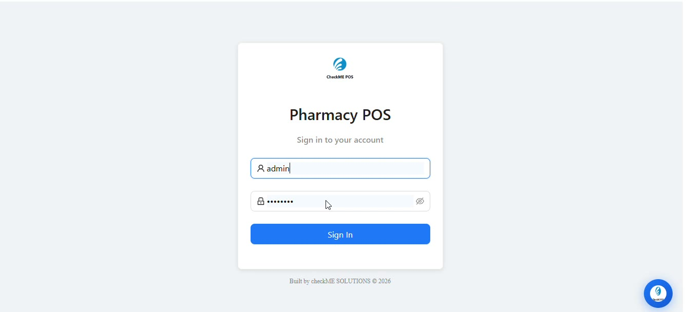

Case Study · 05
A pharmacy point-of-sale system built around Kenyan tax and payments compliance — from KRA ETIMS e-invoicing to M-Pesa.
Pharmacies need every sale fast at the counter, compliant with KRA e-invoicing and reconcilable at shift close — three requirements that usually pull a POS in different directions.

A POS where compliance, speed and accountability run through one consistent invoicing engine, with real-time shift reporting.